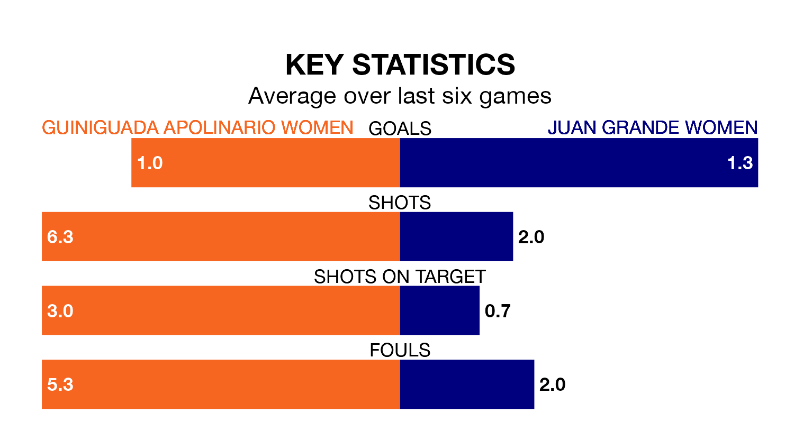

Guiniguada Apolinario Women host Juan Grande Women in Sunday lunchtime's match looking to bounce back from defeat last time out in Segunda Federación Femenina.
Guiniguada Apolinario, who sit zero in the league after 15 games, fell to a 3-0 away defeat to Fundación Tenerife Women on January 13.
They face a Juan Grande side who picked up a win in their last match, a 2-0 victory against La Solana Women, and who sit eighth in the table.
Guiniguada Apolinario are in disappointing form in Segunda Federación Femenina, with two wins and four losses from their last six games.
With three wins and a draw over that period, Juan Grande's form is better – they have taken 10 points from 18, compared to the hosts' six.
With 17 goals in 15 games so far this season, Guiniguada Apolinario are the league's joint--5th-lowest scorers with 1.1 goals per game. And they are conceding more than average, letting in 23 goals at a rate of 1.5 per game.
The away team, meanwhile, are above average scorers, with 1.4 goals per game, compared to a league average of 1.3. They have conceded 0.9 goals per game.
Updated: 14:53 (UTC), 16/01/24